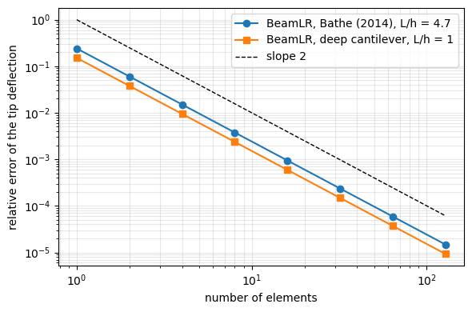
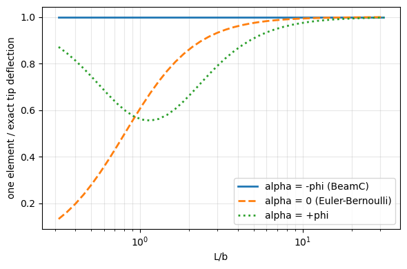
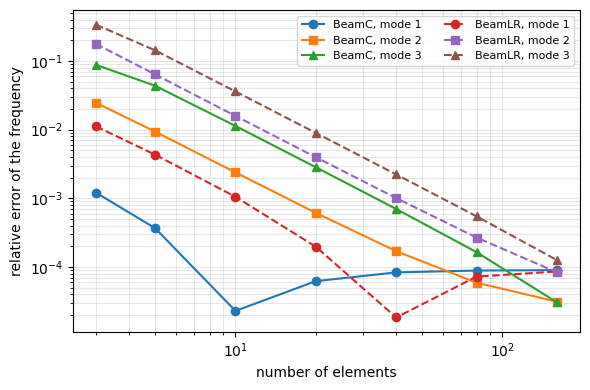

Tutorial: Timoshenko beam benchmarks with BeamC and BeamLR#
Static deflections and natural frequencies of Timoshenko cantilevers computed with the two beam elements of pyfe3d and compared with published values:
BeamC: consistent (interdependent) interpolation, cubic deflection and quadratic rotation that depend on the shear parameter, such that the element solves the homogeneous equilibrium equations of the Timoshenko beam exactly;BeamLR: linear interpolation of the deflection and of the rotation, with reduced integration of the transverse shear;the Euler-Bernoulli beam, without shear deformation, as a third reference.
The references are:
Bathe, K. J., Finite Element Procedures, 2nd ed., K. J. Bathe, Watertown, MA, 2014, Section 1.2, Eq. (1.2) and Fig. 1.2;
Petyt, M., Introduction to Finite Element Vibration Analysis, 2nd ed., Cambridge University Press, 2010, doi:10.1017/CBO9780511761195, Example 3.10 and Table 3.6.
The models are those of tests/test_timoshenko_beam_literature.py and tests/test_beamc_timoshenko_shape_functions.py, imported below.
[1]:
import os
import sys
sys.path.insert(0, os.path.join('..', '..', 'tests'))
import numpy as np
import matplotlib.pyplot as plt
from scipy.optimize import brentq
from pyfe3d.beamprop import BeamProp
from test_timoshenko_beam_literature import (bathe_prop, cantilever_tip,
petyt_coefficients)
import test_beamc_timoshenko_shape_functions as sf
Static deflection of a cantilever with shear deformation#
Bathe (2014), Section 1.2, Fig. 1.2: cantilever of length \(L = 28\) cm, rectangular cross section of height \(h = 6\) cm and thickness \(t = 0.4\) cm, \(E = 2 \times 10^7\) N/cm\(^2\), \(\nu = 0.3\), tip force \(W = 1000\) N. Eq. (1.2) gives the tip deflection with the bending and the shear contributions, with the shear correction factor \(5/6\):
The function bathe_prop() of the test puts the factor \(5/6\) in prop.G. The Euler-Bernoulli deflection is the first term only.
[2]:
L = 28. # cm
W = 1000. # N
prop = bathe_prop()
delta_bending = W*L**3/(3*prop.E*prop.Izz)
delta_ref = delta_bending + W*L/(prop.A*prop.G) # Eq. (1.2) of Bathe (2014)
delta_published = 0.053 # cm
print('%-28s %12s %10s' % ('model', 'delta [cm]', 'error [%]'))
print('%-28s %12.7f %10s' % ('Bathe (2014), published', delta_published, ''))
print('%-28s %12.7f %10s' % ('Bathe (2014), Eq. (1.2)', delta_ref, ''))
print('%-28s %12.7f %10.3f' % ('Euler-Bernoulli', delta_bending,
100*(delta_bending - delta_ref)/delta_ref))
for name, n in [('BeamC', 1), ('BeamC', 3), ('BeamLR', 1), ('BeamLR', 4),
('BeamLR', 16), ('BeamLR', 100)]:
delta = W*cantilever_tip(name, prop, L, n)[0]
print('%-28s %12.7f %10.3f' % ('%s, %d element(s)' % (name, n), delta,
100*(delta - delta_ref)/delta_ref))
delta = W*cantilever_tip('BeamC', prop, L, 1)[0]
print()
print('check: one BeamC element against Eq. (1.2), relative difference %.1e'
% abs(delta/delta_ref - 1))
print('check: one BeamC element rounded to the published two digits: %.3f cm'
% delta)
model delta [cm] error [%]
Bathe (2014), published 0.0530000
Bathe (2014), Eq. (1.2) 0.0526348
Euler-Bernoulli 0.0508148 -3.458
BeamC, 1 element(s) 0.0526348 -0.000
BeamC, 3 element(s) 0.0526348 0.000
BeamLR, 1 element(s) 0.0399311 -24.136
BeamLR, 4 element(s) 0.0518408 -1.508
BeamLR, 16 element(s) 0.0525852 -0.094
BeamLR, 100 element(s) 0.0526335 -0.002
check: one BeamC element against Eq. (1.2), relative difference 2.2e-16
check: one BeamC element rounded to the published two digits: 0.053 cm
One BeamC element gives Eq. (1.2) to round-off; the Euler-Bernoulli beam misses the shear deflection, 3.6 % of the bending deflection of this beam (\(L/h \approx 4.7\)). BeamLR converges with the number of elements. The convergence is plotted below for Bathe’s cantilever and for a cantilever as long as deep, \(L = h\), where the shear deflection is larger than the bending one (the second model of the test, test_deep_cantilever_shear_deflection).
[3]:
def deep_prop():
E, nu, h = 1., 0.3, 1.
p = BeamProp()
p.A = h*h
p.E = E
p.G = E/(2*(1 + nu))
p.Izz = p.Iyy = h**4/12
p.J = 2*h**4/12
return p
cases = {
'Bathe (2014), L/h = 4.7': (bathe_prop(), 28.),
'deep cantilever, L/h = 1': (deep_prop(), 1.),
}
ns = np.array([1, 2, 4, 8, 16, 32, 64, 128])
fig, ax = plt.subplots(figsize=(6, 4))
for (label, (p, Lc)), marker in zip(cases.items(), ['o', 's']):
ref = Lc**3/(3*p.E*p.Izz) + Lc/(p.A*p.G)
err_lr = [abs(cantilever_tip('BeamLR', p, Lc, n)[0]/ref - 1) for n in ns]
err_c = [abs(cantilever_tip('BeamC', p, Lc, n)[0]/ref - 1) for n in ns]
ax.loglog(ns, err_lr, marker=marker, label='BeamLR, ' + label)
print('%s: BeamLR error %s' % (label, ' '.join('%.1e' % e for e in err_lr)))
print('%s: BeamC error %s' % (label, ' '.join('%.1e' % e for e in err_c)))
print('%s: BeamLR order between the last two meshes %.2f'
% (label, np.log(err_lr[-2]/err_lr[-1])/np.log(2)))
ax.loglog(ns, 1./ns**2, 'k--', lw=1, label='slope 2')
ax.set_xlabel('number of elements')
ax.set_ylabel('relative error of the tip deflection')
ax.grid(True, which='both', alpha=0.3)
ax.legend()
plt.tight_layout()
plt.show()
Bathe (2014), L/h = 4.7: BeamLR error 2.4e-01 6.0e-02 1.5e-02 3.8e-03 9.4e-04 2.4e-04 5.9e-05 1.5e-05
Bathe (2014), L/h = 4.7: BeamC error 2.2e-16 1.3e-15 1.9e-14 4.0e-14 2.5e-14 2.1e-13 9.4e-14 6.1e-13
Bathe (2014), L/h = 4.7: BeamLR order between the last two meshes 2.00
deep cantilever, L/h = 1: BeamLR error 1.5e-01 3.8e-02 9.5e-03 2.4e-03 5.9e-04 1.5e-04 3.7e-05 9.2e-06
deep cantilever, L/h = 1: BeamC error 1.1e-16 0.0e+00 2.2e-16 1.6e-15 4.4e-16 6.1e-14 2.3e-13 5.2e-14
deep cantilever, L/h = 1: BeamLR order between the last two meshes 2.00

BeamC is exact with any number of elements (errors at round-off, not plotted on the logarithmic scale); BeamLR converges quadratically.
The shear parameter of BeamC#
With \(\phi = 12 E I/(G A L^2)\), the shape functions of BeamC depend on \(\alpha = -\phi\) and \(\beta = 1/(1 - \alpha) = 1/(1 + \phi)\), see the notes of BeamC. With this sign they solve the homogeneous equilibrium equations of the Timoshenko beam, the same solution as Eq. (3.236) of Petyt (2010), whose denominator \(1 + 3\beta_P\), with \(\beta_P = E I/(\kappa A G a^2)\) and \(a = L/2\), is \(1 + \phi\). Eq. (21) of Luo (2008), the source of the shape
functions (Luo, Y., An Efficient 3D Timoshenko Beam Element with Consistent Shape Functions, Adv. Theor. Appl. Mech., 1(3), 95-106, 2008), gives \(\alpha\) with the positive sign, which BeamC used before version 0.11.0.
The effect of the sign is shown with the shape functions of tests/test_beamc_timoshenko_shape_functions.py, written there for any \(\alpha\): the bending and shear stiffness matrix of one element,
is integrated with a 6-point Gauss quadrature, and the tip deflection of a cantilever with one element under a unit tip force is computed for \(\alpha = -\phi\), \(0\) and \(+\phi\) (the square cross section \(0.3 \times 0.3\), \(E = 1\), \(\nu = 0.3\), \(L = 1\) of that test).
[4]:
def element_matrix(alpha, EI, GA):
L = sf.L
K = np.zeros((12, 12))
points, weights = np.polynomial.legendre.leggauss(6)
h = 1.e-6
for p, w in zip(points, weights):
xi = (p + 1)/2
Nu, Nv, Nw, Nrx, Nry, Nrz, Sv_x, Sw_x = sf.shape_functions(xi, alpha)
# NOTE r_z is quadratic in xi: the central difference is exact
Srz_x = (sf.shape_functions(xi + h, alpha)[5]
- sf.shape_functions(xi - h, alpha)[5])/(2*h*L)
gamma = Sv_x - Nrz
K += w*L/2*(EI*np.outer(Srz_x, Srz_x) + GA*np.outer(gamma, gamma))
return K
def one_element_tip(alpha, EI, GA):
tip = [7, 11] # v and r_z of node 2
K = element_matrix(alpha, EI, GA)
return np.linalg.solve(K[np.ix_(tip, tip)], [1., 0.])[0]
p = sf.get_prop()
EI, GA = p.E*p.Izz, p.G*p.A
phi = 12*EI/(GA*sf.L**2)
exact = sf.L**3/(3*EI) + sf.L/GA
print('phi = %.4f' % phi)
print('Euler-Bernoulli %.3f, Timoshenko (exact) %.3f' % (sf.L**3/(3*EI), exact))
for label, alpha in [('alpha = -phi', -phi), ('alpha = 0', 0.),
('alpha = +phi', +phi)]:
tip = one_element_tip(alpha, EI, GA)
print('%-13s tip deflection %.3f, error %+.2f %%'
% (label, tip, 100*(tip/exact - 1)))
tip, _ = sf.cantilever(1)
print('BeamC, one element: %.3f, relative difference %.1e'
% (tip[0], abs(tip[0]/exact - 1)))
phi = 0.2340
Euler-Bernoulli 493.827, Timoshenko (exact) 522.716
alpha = -phi tip deflection 522.716, error -0.00 %
alpha = 0 tip deflection 493.827, error -5.53 %
alpha = +phi tip deflection 429.073, error -17.91 %
BeamC, one element: 522.716, relative difference 6.7e-16
With \(\alpha = 0\) the interpolation is the cubic Hermite interpolation of the Euler-Bernoulli beam, with no shear strain. With \(\alpha = +\phi\) the element of this beam, \(L/b = 3.3\), is even stiffer than the Euler-Bernoulli beam, although the shear deformation can only make the beam more flexible. Over a range of slenderness, only \(\alpha = -\phi\) gives the exact deflection:
[5]:
# NOTE sf.shape_functions() is written for the length sf.L = 1: the length is
# kept and the side b of the square cross section varies
slenderness = np.logspace(-0.5, 1.5, 40) # L/b
ratios = {'alpha = -phi (BeamC)': [], 'alpha = 0 (Euler-Bernoulli)': [],
'alpha = +phi': []}
for Lb in slenderness:
b = sf.L/Lb
EI_b, GA_b = p.E*b**4/12, p.G*b**2
phi_b = 12*EI_b/(GA_b*sf.L**2)
exact_b = sf.L**3/(3*EI_b) + sf.L/GA_b
for key, alpha in zip(ratios, (-phi_b, 0., phi_b)):
ratios[key].append(one_element_tip(alpha, EI_b, GA_b)/exact_b)
fig, ax = plt.subplots(figsize=(6, 4))
for (key, values), ls in zip(ratios.items(), ['-', '--', ':']):
ax.semilogx(slenderness, values, ls, lw=2, label=key)
ax.set_xlabel('L/b')
ax.set_ylabel('one element / exact tip deflection')
ax.grid(True, which='both', alpha=0.3)
ax.legend()
plt.tight_layout()
plt.show()
print('check: alpha = -phi exact for all L/b, max |ratio - 1| = %.1e'
% np.abs(np.array(ratios['alpha = -phi (BeamC)']) - 1).max())

check: alpha = -phi exact for all L/b, max |ratio - 1| = 3.4e-11
Natural frequencies with shear deformation and rotary inertia#
Petyt (2010), Example 3.10 and Table 3.6: cantilever with radius of gyration \(r_z/L = 0.08\), shear coefficient \(\kappa = 2/3\) and \(E/G = 8/3\), with shear deformation and rotary inertia, in terms of the frequency coefficients \(\lambda = \omega \sqrt{\rho A L^4/(E I)}\). One element with the same shape functions and consistent mass matrix as BeamC gives \(3.322\) and \(26.569\) (p. 99-100); Table 3.6 lists the exact coefficients and the errors of three elements
for \(r_z/L = 0.08\) and \(0.02\). The function petyt_coefficients() of the test assembles the cantilever and keeps the bending in the \(xy\) plane.
[6]:
one = petyt_coefficients('BeamC', 0.08, 1, num_modes=2)
print('one BeamC element, r_z/L = 0.08')
print('%6s %10s %10s' % ('mode', 'Petyt', 'BeamC'))
for i, (ref, c) in enumerate(zip([3.322, 26.569], one)):
print('%6d %10.3f %10.3f' % (i + 1, ref, c))
print('check: max |difference| %.1e (published with three decimals)'
% np.abs(one - [3.322, 26.569]).max())
table_3_6 = {
0.08: ([3.284, 15.488, 34.301], [0.12, 2.47, 8.80]),
0.02: ([3.500, 21.353, 57.474], [0.02, 0.59, 2.37]),
}
for rz_L, (exact, errors) in table_3_6.items():
coef = petyt_coefficients('BeamC', rz_L, 3)
err = 100*(coef - exact)/np.array(exact)
print()
print('three BeamC elements, r_z/L = %.2f' % rz_L)
print('%6s %10s %10s %14s %14s' % ('mode', 'exact', 'BeamC',
'error Petyt %', 'error BeamC %'))
for i in range(3):
print('%6d %10.3f %10.3f %14.2f %14.2f'
% (i + 1, exact[i], coef[i], errors[i], err[i]))
one BeamC element, r_z/L = 0.08
mode Petyt BeamC
1 3.322 3.322
2 26.569 26.569
check: max |difference| 3.0e-04 (published with three decimals)
three BeamC elements, r_z/L = 0.08
mode exact BeamC error Petyt % error BeamC %
1 3.284 3.288 0.12 0.12
2 15.488 15.871 2.47 2.47
3 34.301 37.320 8.80 8.80
three BeamC elements, r_z/L = 0.02
mode exact BeamC error Petyt % error BeamC %
1 3.500 3.500 0.02 0.01
2 21.353 21.480 0.59 0.59
3 57.474 58.839 2.37 2.37
The Euler-Bernoulli cantilever, without shear deformation and rotary inertia, has \(\lambda = x^2\) with \(x\) the roots of \(\cos x \cosh x = -1\). Its coefficients show how much the shear deformation and the rotary inertia lower the frequencies of these deep beams. The convergence of BeamC and BeamLR to the exact values of Table 3.6, \(r_z/L = 0.08\):
[7]:
f = lambda x: np.cos(x)*np.cosh(x) + 1
roots = [brentq(f, a, b) for a, b in [(1, 3), (4, 6), (7, 9)]]
lambda_eb = np.array(roots)**2
exact = np.array(table_3_6[0.08][0])
print('Euler-Bernoulli lambda: %s' % ' '.join('%.3f' % l for l in lambda_eb))
print('Petyt (2010), exact with shear and rotary inertia, r_z/L = 0.08: %s'
% ' '.join('%.3f' % l for l in exact))
ns = np.array([3, 5, 10, 20, 40, 80, 160])
fig, ax = plt.subplots(figsize=(6, 4))
markers = ['o', 's', '^']
for name, ls in [('BeamC', '-'), ('BeamLR', '--')]:
errs = np.array([np.abs(petyt_coefficients(name, 0.08, n)/exact - 1)
for n in ns])
for mode in range(3):
ax.loglog(ns, errs[:, mode], ls, marker=markers[mode],
label='%s, mode %d' % (name, mode + 1))
print('%s, 160 elements: %s' % (name, ' '.join(
'%.4f' % c for c in petyt_coefficients(name, 0.08, 160))))
ax.set_xlabel('number of elements')
ax.set_ylabel('relative error of the frequency')
ax.grid(True, which='both', alpha=0.3)
ax.legend(ncol=2, fontsize=8)
plt.tight_layout()
plt.show()
coef = petyt_coefficients('BeamC', 0.08, 160)
print('check: 160 BeamC elements against the exact values of Table 3.6, '
'max relative difference %.1e' % np.abs(coef/exact - 1).max())
Euler-Bernoulli lambda: 3.516 22.034 61.697
Petyt (2010), exact with shear and rotary inertia, r_z/L = 0.08: 3.284 15.488 34.301
BeamC, 160 elements: 3.2837 15.4885 34.3020
BeamLR, 160 elements: 3.2837 15.4893 34.3053

check: 160 BeamC elements against the exact values of Table 3.6, max relative difference 9.0e-05
Three BeamC elements reproduce the errors of Table 3.6 within their rounding (the exact values have three decimals and the errors two). Both elements converge to the exact values of Table 3.6; the difference left with 160 elements is within the rounding of the three published decimals, which is where the errors of the plot level off. BeamC starts much closer, because its interpolation solves the static equilibrium equations; the error left comes from the interpolation of the inertia
forces.
Summary#
benchmark |
reference |
pyfe3d |
|---|---|---|
cantilever tip deflection with shear |
Bathe (2014), Eq. (1.2), 0.053 cm |
one |
frequency coefficients, one element |
Petyt (2010), Example 3.10: 3.322, 26.569 |
one |
errors of three elements |
Petyt (2010), Table 3.6 |
three |
exact frequency coefficients |
Petyt (2010), Table 3.6 |
|